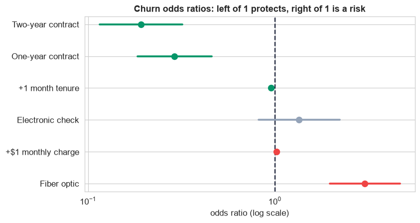

A regression predicts a number; a classifier predicts a category. The pipeline is nearly identical, but the finish line changes: instead of dollars and R², we deal in probabilities, odds ratios, a decision threshold, and the recall/precision trade-off. This is that pipeline, on customer churn.
The target is imbalanced (only ~30% churn), so accuracy misleads, and it arrives in eight different spellings of yes/no. Cleaning the label is as important as cleaning the features.
The Same 12-Step Method
Classification does not need a new playbook, it needs the same one, with logistic-specific tools at the build and validate steps.
760 customers with gender, senior_citizen,
partner, tenure_months, contract, internet_service,
payment_method, monthly_charges, total_charges, and the target
churn.
Define, Collect, Inspect, Clean (Steps 1–4)
Define the objective
Predict which customers will churn, so a retention team can intervene first. Because a missed churner (a lost customer) costs far more than a needless retention call, we will care most about recall, and the decision threshold is a business lever, not a fixed 0.5.
Collect the data
Customer data lives in a CRM or billing warehouse; the readers are the same as any project
(pd.read_sql, pd.read_csv, an API via pd.json_normalize). Ours is a CSV
export.
Inspect the data
info(), value_counts(), and the dtypes reveal the mess: the target in eight spellings,
categories in every case, and total_charges stored as text (because blank for brand-new
customers), plus 15 duplicate IDs.
Clean the data
| Problem | Detail | Fix |
|---|---|---|
| Inconsistent target | Yes / yes / Y / 1 and No / no / N / 0 | upper-case, map to 1 / 0 (clean the label first) |
| Messy categories | gender ×5, contract ×6, senior 0/1 & Yes/No | normalize case, map to one canonical spelling |
| Number stored as text | total_charges blank for new customers | pd.to_numeric(errors="coerce"), then impute (0 if brand-new, else tenure × monthly) |
| Duplicates | 15 repeated customer_id | deduplicate |
After cleaning, 760 customers remain, with a churn rate of 30%. The lesson unique to classification: clean the target label before anything else, a model that thinks "Yes" and "Y" are two different outcomes is doomed from the start.
Visualize, Transform, Analyze (Steps 5–7)
Visualize the data
With a categorical target, the key picture is the churn rate within each group. Contract length jumps out immediately:
Month-to-month customers churn at 39%, versus 25% on one-year and just 16% on two-year contracts, a massive, obvious signal. And the target is imbalanced (30% churn), which is why we will judge the model by AUC and recall, not accuracy: a lazy "nobody churns" model already scores 70%. The same breakdown by internet service and payment method fills in the rest of the picture:
The pattern is clear: fiber-optic customers churn most (37%), well above DSL (23%) or no-internet (27%), a group worth watching. Payment method matters less, a smaller spread, so it is a weaker signal than contract or internet. Reading these group rates before modeling tells us which features should carry weight, and lets us sanity-check the model's coefficients afterward.
Transform features
Logistic regression needs numbers, so the nominal categories (contract, internet_service,
payment_method) become dummy variables, one level held out as the reference.
One trap: total_charges is essentially tenure × monthly_charges, so keeping all three
would create multicollinearity. We flag it and confirm with VIF in step 9.
Analyze patterns
Churn rate by group and the numeric correlations confirm the story: tenure is protective (long-time customers stay), monthly charges push the other way, and electronic-check payers churn a little more. A clear hypothesis for the model to quantify.
Build and Validate (Steps 8–9)
Build the model
One call fits a logistic regression of churn on tenure, monthly charges, contract, internet, payment,
and demographics. The coefficients are on the log-odds scale (we exponentiate them in step 10); the summary flags
contract, tenure, monthly charges, and fiber as strongly significant.
Validate the model
A classifier is judged on how well it ranks risk and on the errors it makes. Both, plus the collinearity check:
| Check | Result | Action |
|---|---|---|
| Multicollinearity (VIF) | total_charges = 9.0 | redundant (= tenure × monthly); leave it out |
| Ranking (AUC) | 0.81 | the model ranks churners well above stayers |
| Overfitting (5-fold CV) | CV AUC = 0.79 | close to training, not overfit |
| Errors at threshold 0.5 | recall only 0.53 | too many churners missed for a retention use |
The ROC curve shows the ranking quality at every threshold at once:
Now the decision. At the default 0.5 threshold the model catches barely half the churners, useless when the goal is retention. Because missing a churner costs more than a false alarm, we lower the threshold to 0.3, trading precision for recall:
Dropping the cutoff lifts recall from 53% to 75%: the retention team now reaches three of every four customers who would have left, at the cost of some unnecessary calls. That trade is exactly the business decision a classifier exists to inform. Sweeping the threshold across its whole range shows the full trade-off:
Read it as a dial. As the threshold drops (moving left), recall climbs, more churners caught, while precision falls, more of the flagged customers turn out to be false alarms. There is no single "best" point on this curve; the right threshold depends on the cost of a missed churner versus a wasted call, which the companion notebook turns into a dollar calculation.
Interpret and Deploy (Steps 10–11)
Interpret the results

Each factor's odds ratio with its confidence interval: bars to the right of 1 raise churn, to the left protect against it, the whole model's story in one plot.
Exponentiating each coefficient gives an odds ratio, the factor by which the odds of churn multiply. Below 1 protects; above 1 is a risk:
Contract length is the biggest lever. A two-year contract carries about 80% lower churn odds than month-to-month (odds ratio 0.19); a one-year contract about 70% lower. Tenure protects, each extra year cuts the odds ~44%. On the risk side, fiber-optic internet triples the odds versus DSL, and every extra $10 on the bill raises them ~20%.
Actionable retention plays: (1) migrate month-to-month customers onto annual contracts, the single highest-impact move; (2) watch new, high-bill, fiber customers in their first year; (3) build a weekly call list from the model's probability at the 0.3 threshold.
Deploy the model
Persist the model and cleaning as one Pipeline; batch-score every active customer nightly, writing a churn probability and a risk flag into the CRM; tune the threshold to the economics (cheap offer, costly loss → low threshold, high recall); monitor precision, recall, and the churn base-rate for drift, and retrain quarterly. A guardrail worth stating: a churn model must support human judgment and must not simply proxy protected attributes, log inputs for auditing and fairness review.
Communicate: the Plain-English Write-Up (Step 12)
For the retention manager
What we did. We took an export of past customers, cleaned it (removed duplicates, fixed the many spellings of "yes/no" and of the plan names, and turned a text "total charges" field into real numbers), and built a formula that scores each customer's chance of leaving.
How good is it? Given two customers, the model ranks the riskier one correctly about 81 times out of 100. Tuned to prioritize catching leavers, it flags about three-quarters of the customers who go on to churn.
Who leaves, and what to do:
- ✓Month-to-month customers are by far the most likely to leave; moving them to a one- or two-year contract cuts their risk by roughly 70–80%, the biggest win available.
- ✓Newer, higher-bill, and fiber-optic customers are higher risk, especially in year one.
- ✓Use the score to build a weekly retention call list of the highest-risk customers.
The honest caveats. The model reflects past behavior and should be refreshed as prices and competitors change; its score should support, not replace, a human decision.
The takeaway: lock in month-to-month customers, and watch new high-bill fiber accounts.
Run the whole classification project in Python
The companion notebook is the full 12-step pipeline: it loads and inspects the messy export, cleans the eight-spelling target and the text-valued charges, visualizes churn by group and the class imbalance, dummy-encodes the categories, fits the logistic regression, validates it (VIF, ROC/AUC, cross-validation, confusion matrices, and a precision/recall threshold sweep), reads the odds ratios as a retention plan, and closes with deployment and a plain-English write-up. Every table and chart is explained.
View opens the rendered notebook instantly. Open in Colab runs it live. To run
locally, install numpy, pandas, matplotlib, seaborn,
statsmodels, and scikit-learn.
🎓 Key Takeaways
- ✓Same 12-step method as regression, with logistic-specific tools: probabilities, odds ratios, AUC, a confusion matrix, and a chosen threshold.
- ✓Clean the label first: the target arrived in eight spellings of yes/no; a model cannot learn if "Yes" and "Y" look different.
- ✓Imbalance changes the metrics: with 30% churn, accuracy misleads, judge by AUC (0.81) and recall instead.
- ✓The threshold is a business decision: lowering it from 0.5 to 0.3 lifted recall from 53% to 75%, catching far more churners at the cost of some false alarms.
- ✓Odds ratios become actions: a two-year contract cuts churn odds ~80%, so the top retention play is migrating month-to-month customers to annual plans.
Take It Further
Five ways to extend the churn study in the notebook:
Cost-based threshold
Given a $50 retention offer and a $600 lost-customer cost, find the threshold that minimizes expected cost.
Handle the imbalance
Refit with class_weight="balanced"; how do recall and the odds ratios change?
LogisticRegression(class_weight="balanced") (Ch 96).Add an interaction
Does the tenure effect differ by contract type? Test tenure_months : C(contract).
Calibration check
Bin predicted probabilities and compare to actual churn rates, is a predicted 30% really ~30%?
sklearn.calibration.calibration_curve.Score a new customer
Build a one-row DataFrame for a new customer and print their churn probability and risk flag.
model.predict(new_row), then compare to your threshold.All five, worked in a companion notebook
A second notebook, Take It Further, recaps the Chapter 101 churn model and then works every one of these five extensions with visuals and explanations, a cost-based threshold, class weighting for the imbalance, a tenure-by-contract interaction, a calibration check, and scoring a new customer, closing with a plain-English summary.
Quiz: Test Yourself
Eight questions on the classification case study. Answer them, hit Check Answers, and keep refining until you score 100%. Your progress is saved, so you can hop back to the chapter and return anytime.
You have now run both a regression and a classification project end to end, from a dirty file to a deployed, explained model. The case studies continue with Chapter 102 · Forecasting Daily Bike-Share Demand, a count-outcome project, and Chapter 103 · Predicting Medical Charges, a many-feature regularized model.